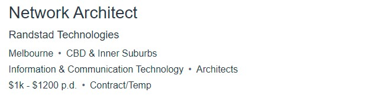
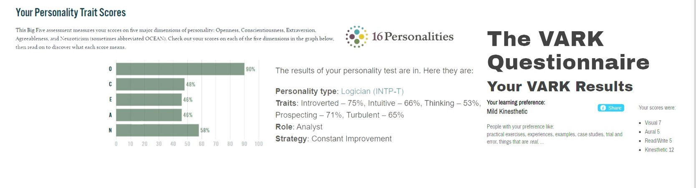

Name: Kabir Sekhon.
Student Number: S3842167
Email Address: S3842167@student.rmit.edu.au
Nationality: Born In Australia but ethnically Indian
Education: Diploma of Information Technology (Networking) and Victorian Certificate of Education (Graduated Dec 2019)
Languages: Fluent in English, Punjabi, Urdu, and Hindi
Other Information: I have a brown labrador that 2 years old, my hobbies include Motorbiking, Car Racing (F1) and Soccer.
My interest in I.T started at quite at young age, I think when I got my first laptop in year 4 or 5 I had become obsessed with my laptop and everything I could possibly ever do with it.
I learned a lot from this first laptop I was given, like how to remove user access control settings that was set by my school or even just exploiting the really poor security of my school’s network.
My interest in I.T also developed from obsession of taking things apart and putting it back together through this learnt.
I choose to come to RMIT for several reasons. First one is that I RMIT is university that has strong focus on IT and from what I had heard about from friends, family and teachers is that RMIT is one the best universities to go if you want to learn IT.
Another reason is that I live nearby the city. Because of this I won't have to pay for rent or live in university accommodation, it will be easier for me to support my studies financially also just generally save time in travel.
I expect to learn all the skills and knowledge for me to able to do my the profession that I can end up transferring in whatever I end up choosing. For this class specially I expect to learn a wide arrange for things that is possible to do in the IT field. I hope that I can also learn the possible career pathways that are available in the field I am studying in how I can pursue and do my best in that profession.
My ideal job would be for the postion of a
This position appeals to me because I’m really interested in the networking side of IT and out of the position you can possibly be due in the field of networking I found that my skills and personals interest aligned to this position.
I like to work on big projects and to go step by step and see everything how materialise from just some planning. The other thing is just the amount of money you get paid for this position and how this position is in an industry that will always continue to grow.
As listed on the website for the position: To be successful in this position you will be a highly experienced Network Architect who has solid experience in designing networks within a LAN, WAN, WiFI, protocols, SD-LAN, SD- WAN, PoE, NAC,Content filtering, DDos protection and associated devices (switches, WAp's firewalls, routers, load balancers, DMZ etc). You will also have solid experience with Cisco and Aruba products. Excellent communication and stakeholder engagement skills are a must.
My current experience is that in my Diploma of Information Technology (Networking) I have low level experience on most of what is required I have designed network with most of the technology and devies that have been mentioned in the Job Advertisement.
My plan as of now is just to obtain a Bachelor of Information Technology and while I'm doing that try to pick up as much certification as possible I can get for the Networking field.

These results let me know of what my personal strengths are highlights what my preferences are for learning and other aspects of life. These tests have also let me explore my personality type and what potential issues that may came up in my life, also what strategies I can possibly implement to combat those issues. In terns how these results will affect my behaviours I believe I now know what I would be best at in group setting and this will allow me do best work in a group and let others do what they may be better suited at compared to me. When forming a group, I think it would be best to get different personality types in a group and find somebody that has leadership type of personality to lead the group or even to have extroverted personality who will be able best perform and represent a group in front of the public.
My project will be trying to produce a product that will serve the purpose of Motorbike Dashboard and Infotainment System. I would like to produce product that will be show all the essential information of motorbike dashboard like the Revs, KM/H, Warning Lights……. And also be able to function as GPS where you able to get directions from the system. Another part I the system will have is the ability to have Media control, where you will be able to connect your Helmet Headsets to the system so that you can control and be able to view the media you are listening to this includes control of volume and music selection.
Well, the motivation to this project is a personal one as I currently have motorbike and I have seen that there is market gap for aftermarket versions of this product. For me personally I need a system like this as when I use a phone mount for my iPhone I run the risk of my camera breaking due to vibrations and I have already had happen two times before. So instead of using my phone as media and GPS system I believe a permanent infotainment system will be much better solution for my needs and would also end saving me a lot more money in regard to phone repairs also in my own opinion I believe a phone mount ruins the aesthetic of motorbikes.
This product will have:
______________________________________________________________________________________________________________________________________________________________________________________________________________________________________________________________________________________________________________________________________________________________________________________________________________________________________________________________________________________________________________________________________________________________________________________________________________________________________________________________________________________________________________________________________________________________________________________________
So dependent on the motorbike model and brand you are installing the product with you will be given an adapter kit that will work with your specific motorbike so that will include custom mounting bracket and custom wiring loom that will be able seamlessly plug in to the OEM connectors. And if you choose to add on the optional multi controller that fits on the your handle bar you will have to install the wiring from the handlebars to the system which will have port for you to plug in the wires. The core component of the system being touchscreen head unit will remain the same for every type of bike, but the product will need to have a custom made to fit mounting system and for this we will making mounts that will be able to support the most commonly sold motorbike from the last 7 years. The head unit will need correctly configured by the end user for the system to run exactly like the original dashboard.
I plan on using the Open-Source Operating System of Linux and using the latest Raspberry Model Pi 4 B in regard to the core computing system. For the display an TFT LCD Capacitive Touch-screen Display that has been treated with Anti-fingerprint (AF), Anti-glare (AG), Anti-reflection(AR) surface treatment with 16:9 aspect ratio and resolution of 1920 X 1080 also with 50HZ refresh rate. A Custom program will need to be made for this but will need to make for this system, but we will be able to use source code from the OpenAuto project which already helps with the integration of Android Auto with Raspberry Pi’s.
If the project is successful, I believe we will have product that is able to gather a not too niche market of people who are looking for aftermarket devices for motorcycles and people who trying to find alternative then just using a mobile phone as GPS and media device while on a motorbike. For my personal issue if this product is successful and I am able to implement this in my own motorbike I have solved my issue as I will no longer be reliant on my mobile phone and thus forth no longer have to pay for phone repairs.